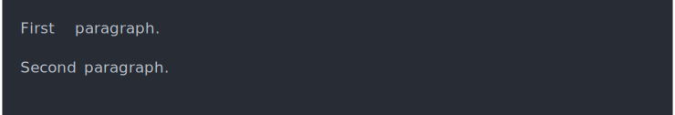
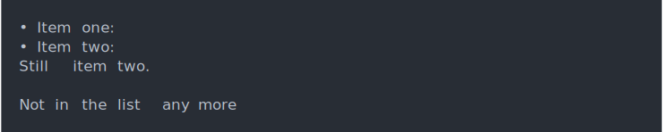
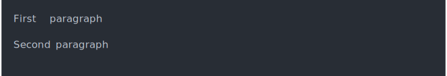
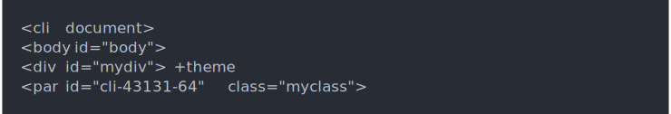

| cli_end {cli} | R Documentation |
Containers aut0-close by default, but sometimes you need to explicitly close them. Closing a container also closes all of its nested containers.
cli_end(id = NULL)
id |
Id of the container to close. If missing, the current container is closed, if any. |
cnt <- cli_par()
cli_text("First paragraph.")
cli_end(cnt)
cnt <- cli_par()
cli_text("Second paragraph.")
cli_end(cnt)

list <- cli_ul()
cli_li("Item one:")
cli_li("Item two:")
cli_par()
cli_text("Still item two.")
cli_end(list)
cli_text("Not in the list any more")

idIf id is omitted, the container that was opened last will be closed.
cli_par()
cli_text("First paragraph")
cli_end()
cli_par()
cli_text("Second paragraph")
cli_end()

You can use the internal cli:::cli_debug_doc() function to see the
currently open containers.
fun <- function() {
cli_div(id = "mydiv")
cli_par(class = "myclass")
cli:::cli_debug_doc()
}
fun()
